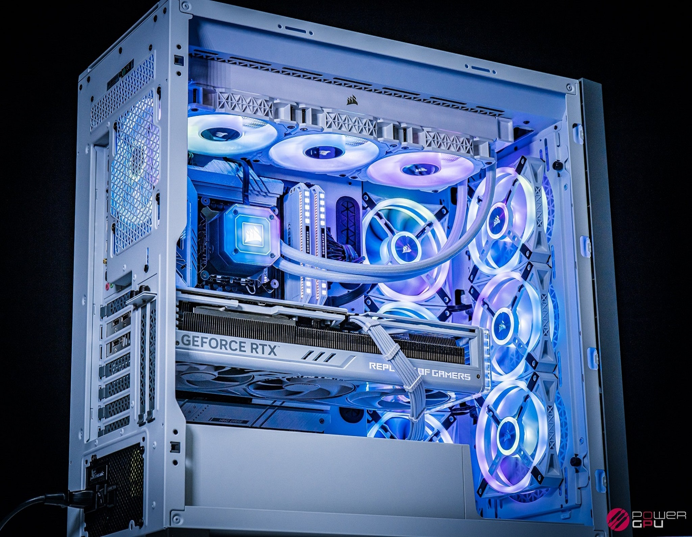

At the heart of your AMD-powered PC lies a processing powerhouse, ready to tackle the most demanding tasks with ease. Experience lightning-fast speeds and seamless multitasking, empowering you to navigate through your digital world with unparalleled efficiency.

Immerse yourself in a world of gaming excellence with Intel's exceptional graphics and processing capabilities. Our Intel-powered PCs are engineered to deliver high frame rates, stunning visuals, and the responsiveness required to dominate the gaming arena.